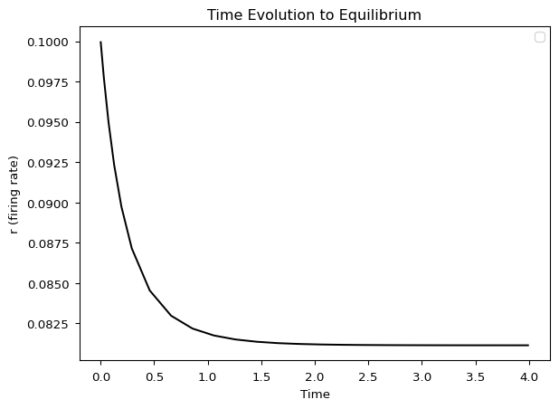

Parameter Continuation and Bifurcation Detection with TVBO
In this tutorial, you will learn how to perform a 1D numerical parameter continuation with automatic fold bifurcation detection using TVBO for model specification and PyRates/PyCoBi for the continuation analysis.
import osimport matplotlib.pyplot as pltfrom pycobi import ODESystemfrom pyrates import CircuitTemplatefrom IPython.display import Markdownfrom tvbo import Dynamicsqif_model = Dynamics.from_string("""name: QIFdescription: Quadratic Integrate-and-Fire (QIF) population mean-field model.parameters: tau: value: 1.0 description: Population time constant eta: value: -5.0 description: mean of a Lorentzian distribution over the neural excitability Delta: value: 1.0 description: half-width of a Lorentzian distribution over the neural excitability J: value: 15.0 description: strength of the recurrent coupling inside the populationstate_variables: r: description: Average firing rate equation: rhs: Delta/(tau*pi) + 2*r*v initial_value: 0.1 v: description: Average membrane potential equation: rhs: v**2 + eta + J*r*tau - (pi*r*tau)**2 initial_value: -2.0references: - Montbriot2015""")Markdown(qif_model.generate_report())
/Users/leonmartin_bih/tools/tvbo/.venv/lib/python3.13/site-packages/requests/__init__.py:113: RequestsDependencyWarning: urllib3 (2.6.3) or chardet (6.0.0.post1)/charset_normalizer (3.4.4) doesn't match a supported version!
warnings.warn(
QIF
Quadratic Integrate-and-Fire (QIF) population mean-field model.
mean of a Lorentzian distribution over the neural excitability
\(\Delta\)
1.0
N/A
half-width of a Lorentzian distribution over the neural excitability
\(J\)
15.0
N/A
strength of the recurrent coupling inside the population
# Export to PyRates YAML formatos.makedirs('_qif_model', exist_ok=True)withopen('_qif_model/__init__.py', 'w') as f: f.write('')qif_model.to_yaml(format="pyrates", filepath='_qif_model/qif.yaml')print("Model exported to PyRates format")
Model exported to PyRates format
Step 2: Generate Fortran Routines for AUTO-07p
Next, we translate the model into a Fortran file containing all subroutines required by AUTO-07p. This requires using the Fortran backend of PyRates with vectorize=False:
# Load the TVBO-exported model into PyRatesqif = CircuitTemplate.from_yaml("_qif_model.qif.QIF_circuit")# Generate Fortran file with AUTO-07p subroutines# Setting auto=True creates two files: .f90 (Fortran code) and c.ivp (AUTO constants)qif.get_run_func( func_name='qif_rhs', file_name='qif', step_size=1e-4, auto=True, backend='fortran', solver='scipy', vectorize=False, float_precision='float64')
Compilation Progress
--------------------
(1) Translating the circuit template into a networkx graph representation...
...finished.
(2) Preprocessing edge transmission operations...
...finished.
(3) Parsing the model equations into a compute graph...
...finished.
Model compilation was finished.
The default parameters allow solving the initial value problem (performing simulations). For detailed explanation of these parameters, see the AUTO-07p documentation.
Step 3: Generate a PyCoBi Instance
Now that the model equations are compiled, we generate an instance of pycobi.ODESystem, which provides an interface to AUTO-07p:
-------------------------------------------------------------
Could not import plotting modules, plotting will be disabled.
This is probably because Tkinter is not enabled in your Python installation.
-------------------------------------------------------------
Now we can use all tools provided by AUTO-07p to investigate how the model reacts to changes in its parameterization.
Part 2: Performing Parameter Continuations
Step 1: Time Continuation
In parameter continuations, we must start from an equilibrium or periodic orbit. We run a time continuation to let the system converge to an equilibrium:
# Time continuation: integrate until system converges to equilibriumt_sols, t_cont = qif_auto.run( c='ivp', name='time', DS=1e-4, DSMIN=1e-10, DSMAX=1e-2, EPSL=1e-08, EPSU=1e-08, EPSS=1e-06, NMX=1000, UZR={14: 4.0}, # Create marker when time (PAR 14) reaches 4.0 STOP={'UZ1'} # Stop at first user marker)# Plot time evolutionqif_auto.plot_continuation('PAR(14)', 'U(1)', cont='time')plt.xlabel('Time')plt.ylabel('r (firing rate)')plt.title('Time Evolution to Equilibrium')plt.show()
/Users/leonmartin_bih/tools/tvbo/.venv/lib/python3.13/site-packages/pycobi/pycobi.py:677: UserWarning: No artists with labels found to put in legend. Note that artists whose label start with an underscore are ignored when legend() is called with no argument.
ax.legend()

Key parameters explained:
DS=1e-4: Initial step-size (in time units)
DSMIN=1e-10: Minimum step-size
DSMAX=1e-2: Maximum step-size
NMX=1000: Maximum number of continuation steps
UZR={14: 4.0}: Create user marker when parameter 14 (time) reaches 4.0
STOP={'UZ1'}: Stop at first user marker
The values for U(1) and U(2) converged to certain values, representing \(r\) and \(v\) at equilibrium.
Step 2: Continuation of \(\bar\eta\)
Now we perform the parameter continuation in \(\bar\eta\):
The curve represents the value of \(r\) (y-axis) at equilibrium solutions for each value of \(\bar\eta\) (x-axis):
Solid line: Stable equilibrium
Dotted line: Unstable equilibrium
Triangles (LP): Fold (limit point) bifurcations
At a fold bifurcation, the critical eigenvalue of the vector field crosses the imaginary axis (its real part changes sign), indicating a change of stability. A stable and unstable equilibrium approach and annihilate each other.
import shutil# Clean up temporary filesqif.clear()shutil.rmtree('_continuation', ignore_errors=True)# Remove generated filesfor f in ['qif.f90', 'c.ivp']:if os.path.exists(f): os.remove(f)print("Cleaned up temporary files")